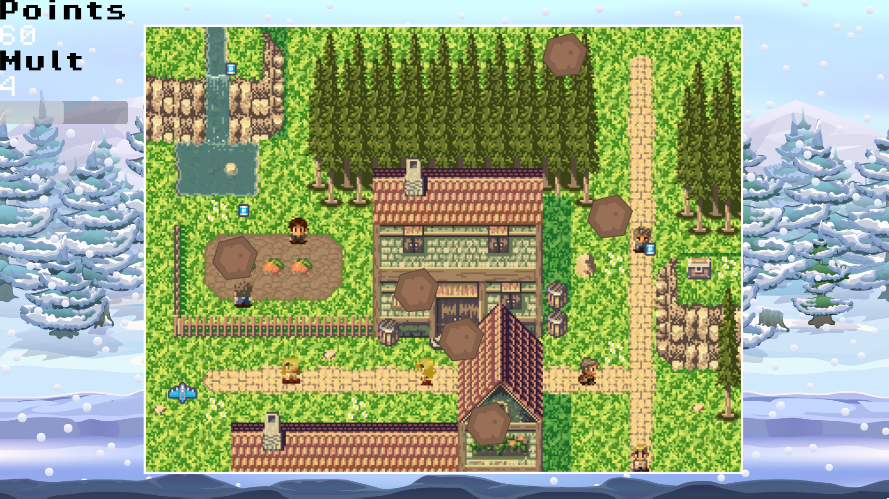

Last Breath
Last Breath is a small arcade game where you must survive for as long as you can while trapped in a gravity well surrounded by asteroids.
It was built in about ten hours worth of work for the Brackeys Game Jam 2025.1 and can be played using the above embed.
The goal of the project was to learn how to use Pico-8, a fantasy console which also acts as an all in one development software for itself.
The console uses a modified version of Lua and is built with many restrictions in mind such as an 8192 token limit,
extremely limited sprite and map sheets which share space, a set window size of 128x128, and a set colour pallet of 16 colours.
Using such a restrictive development environment was an interesting experiment that forced me to change the way I thought about developing the project.
When given limited tools, I had to focus carefully upon how I structured my code to keep the codebase usable.
Now I have built one project in Pico-8, I'm extremely interested in building a more complicated game in it which will force me to think carefully
about how best to manage the limited resources.
Controls
- Left and right arrow keys move the ship forward and in their respective directions.
- Be aware that your ship carries a lot of momentum from small actions.
- Z and X fire your left and right lasers.
Gameplay
- Survive as long as you can without getting hit by asteroids and score as many points as possible.
- You earn 1 point for avoiding an asteroid or 5 points for shooting one.
- The border of the gravity well shoots you back into the middle—this can either save your ship or end it depending on how well you use it.
- Navigate the menu with the up and down arrow keys and select with Z.
View on itch.io
View Github
Arcade Survival


Created in 2 days for the NCL Gameathon Jam 2025 and built in Godot, Arcade Survival is a short arcade game where you have 60 seconds
to score as many points as possible. You do this by switching between a variety of arcade style games to build up your multiplier and then
playing the individual games to score as many points as possible.
There were 2 main goals of this project. The first was to gain experience using Godot. It is an extremely useful engine due to its small footprint
allowing me to use it on systems which can't run larger engines and the and node system which is very powerful for making prototypes quickly and
iterating upon them to improve the project. The small timescale of the jam also allowed me to think very carefully about ensuring my project has appropriate
scope and what my minimum viable product would look like. These 2 constraints ensured a fast paced project that I was able to learn a lot from.
Play Now
View GitHub